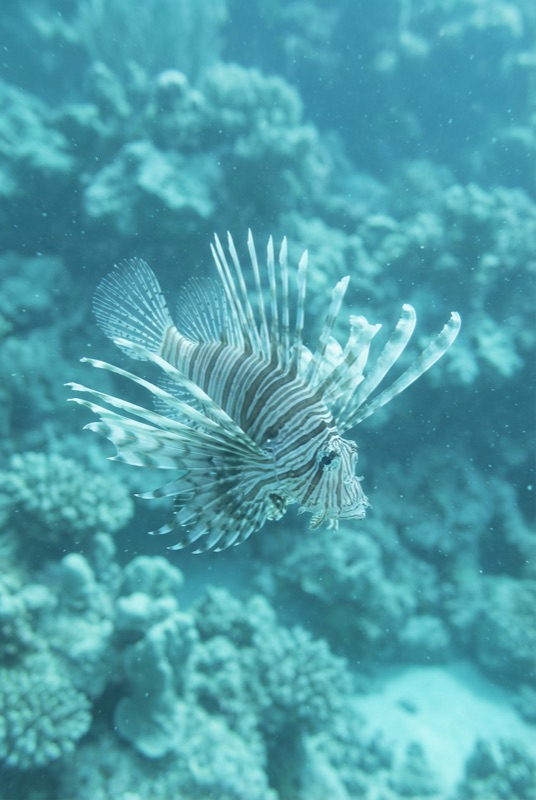
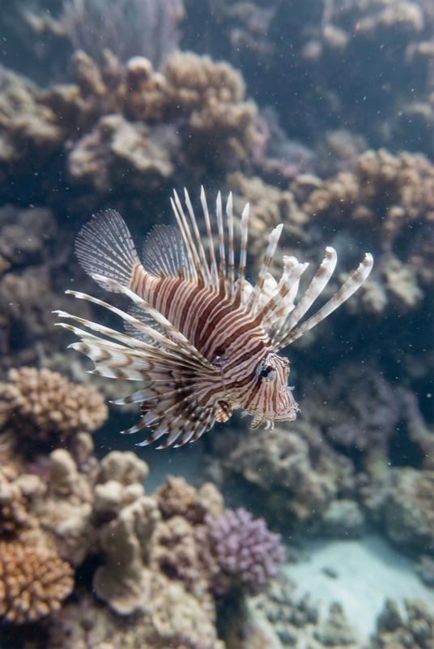
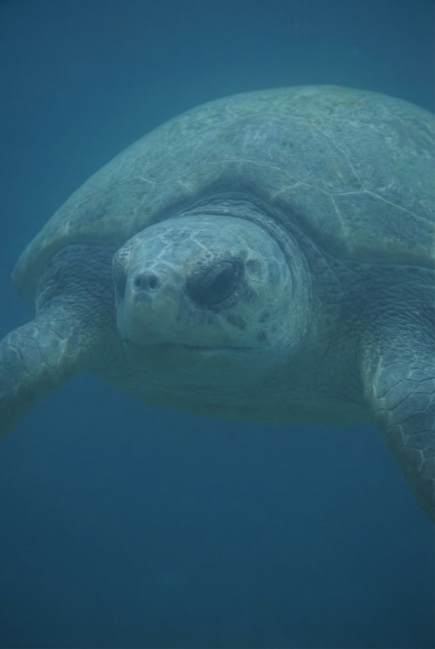
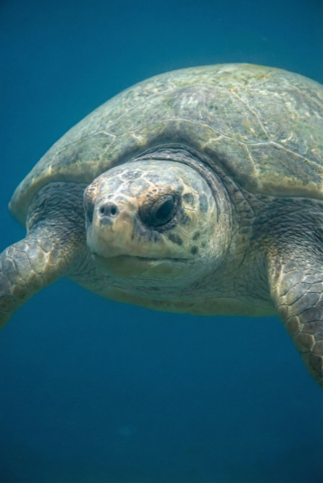
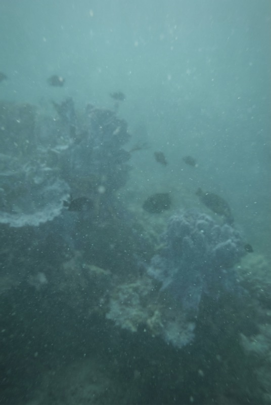
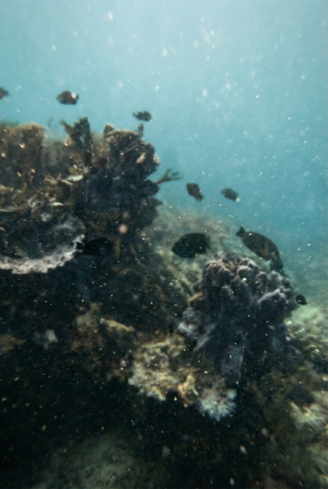

See what you actually saw. One-tap AI enhancement for underwater photos.
Get Early AccessReal underwater photos enhanced with AquaEdit


Before After

Before After

Before AfterPowered by AI, built for divers
Select a photo, tap enhance. AI does the rest — no sliders, no manual adjustments needed.
Advanced AI understands underwater light physics to restore true-to-life colors lost at depth.
Enhance your whole dive album at once. No need to edit photos one by one.
Instantly compare original and enhanced versions side by side to see the difference.
AquaEdit is currently in beta testing via TestFlight.
Join TestFlight Beta